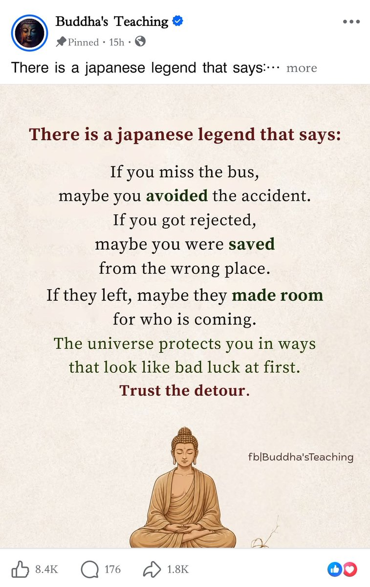

大狐帝国史官邹智萱（笔名段歌文）
@Rococo90933671
@Phoenixyin13 我在那些平台上逛英文区，关注了几个，然后就经常刷到了。后来发现他们就是车轱辘的那么几段话不停重复😂
你说他们说错了吗？那也没错。只是能不能真正促使浮躁的网友们去执行，这是个大问题

Phoenix Yin
@Phoenixyin13
当代部分佛学属于伪修行，彻底娱乐化鸡汤化。
这期我不谈佛学是否真还是假，我只说形式。
短视频时代对传统宗教修行体系的系统性降维打击。佛学，尤其是禅修、正念、觉醒这些概念，被平台算法彻底改造成情绪快消品，核心就是把苦修、观照、破执这些硬核东西，包装成15-60秒的爽感治愈代入。 https://t.co/S9YTAwvh36